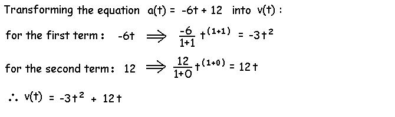
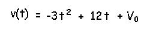
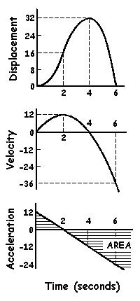

Elementary Calculus
Integral Calculus
Suppose we knew the function for acceleration but not the functions of velocity and displacement. Integral calculus is the method used to transform acceleration into velocity and to transform velocity into displacement. It is the opposite of differential calculus. Again, we use a transfer function on each term of the acceleration function to integrate it.

Every time we integrate we must include the initial condition. In the case of the function above, this would be the velocity at time zero (V0) such that the integration should really yield the following function for velocity:

In this case , V0 = 0 but the process of integration does not allow the initial condition to be determined and it must, therefore, be given.

Notice that the velocity function is the area of the acceleration function. As the area of the acceleration function increases between 0 and 2 seconds, the velocity increases. As the area of the acceleration function becomes negative after 2 seconds, the velocity decreases. At 4 seconds, the area of the acceleration function is zero (equal positive and negative areas) and the velocity is zero. As the area of the acceleration function becomes increasingly negative after 4 seconds, the velocity does also.
Summary
Differentiation is the process used to find slopes and can be used to determine velocity from displacement and acceleration from velocity. Integration is the process used to find areas and can be used to determine velocity from acceleration and displacement from velocity. Each process makes use of a simple transfer function that is applied to each term of the equation. In the case of integration, you must add an initial condition each time you integrate.